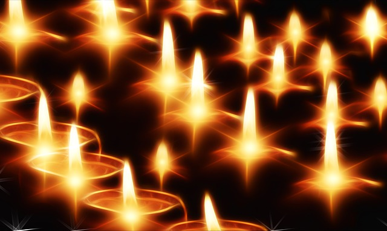
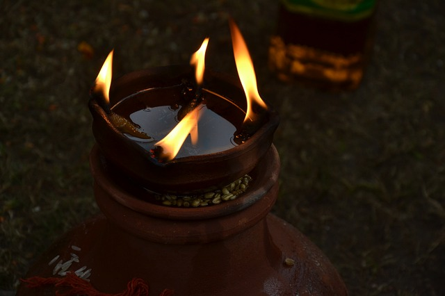

Diwali Pooja
 A Diwali pooja is worship to the Deities of the Hindu Religion in the form of prayer, offerings and sacrifices. The day of Diwali is important since it signifies the worship and praise of devotees to the various deities; but most importantly, it is a day of praise to Goddess Lakshmi and by extension the divine mother of the entire universe and the earthly (physical) mother. Most devout Hindus perform the Dipavali Pooja in a fixed, ritualistic pattern, by celebrating in praise and offerings to Lord Ganesh, Lord Shiva, The Nine Planets, Kalsa (representing the Universe) and Mother Lakshmi.{kind=link}
During the Dipavali Poojan, offerings are made to the fire (Agni devta), which is viewed as the mouth of the Divine- it is the actual feeding of the God. During Diwali Pooja, sixteen prescribed steps occur (symbolic of the sixteen ceremonies to be completed in the life span of a Hindu) including the welcoming of the Deity, giving the Deity a place to sit, the washing of the feet, decorating the Deity, and the offering of food items, clothing or money to seek blessings.
Fresh, sweet-scented flowers along with specific herbs and plants are used, as well as Jhal/Phaag (a combination of milk, ghee, honey and spices). The planting of flags with significant colors associated with the deities is used to symbolize the offerings. In addition, this particular Pooja not only celebrates happiness with light, but with song, chanting, tasting of food, ringing of bells, and the blowing of Conch shells as blessings are bestowed among family members.
Tiny lamps of clay are lighted to drive away the shadows of evil spirits and Self-enlightenment is expressed. It is believed that on this day Lakshmi visits each household and showers her blessings on man for plenty and prosperity. Once the ceremonial worship is finished in the evening, sweets are offered to the goddess as "Naivedya" and distributed as "Prasad". Feasts are arranged and gifts are exchanged on this day. Gaily dressed men, women and children go to temples and fairs, visit friends and relatives.
One of the most curious customs, which characterizes this festival of Dipavali, is the indulgence of gambling, especially on a large scale in North India. It is believed that Goddess Parvati played dice with her husband, Lord Shiva on this day and she decreed that whosoever gambled on Diwali night would prosper throughout the ensuring year. This tradition of playing cards- flush and rummy with stakes on this particular day continues even to day.
Diwali Meaning & Significance
 Deepavali is a festival where people from all age groups participate. They give expression to their happiness by lighting earthen 'diyas' (lamps), decorating the houses, bursting firecrackers and inviting near and dear ones to their households for partaking in a sumptuous feast. The lighting of lamps is a way of paying obeisance to god for attainment of health, wealth, knowledge, peace, valor and fame.{kind=link}
It is one time in the whole year that children volunteer to leave their beds long before the day begins. In fact, the traditional oil bath at 3 a.m, is the only chore that stands between them and the pre-dawn adventures. They emerge, scrubbed clean to get into their festive attire, and light up little oil lamps, candles and scented sticks(agarbathis), the wherewithal for setting alight crackers and sparklers.
On Diwali night, little clay lamps are lit in Hindus homes, but now a days colored electric lamps are also used. What is the significance of lighting a lamp? There is a logical answer to this question. It is through the light that the beauty of this world is revealed or experienced. Most civilizations of the world recognize the importance of light as a gift of God. It has always been a symbol of whatever is positive in our world of experience.
To Hindus, darkness represents ignorance, and light is a metaphor for knowledge. Therefore, lighting a lamp symbolizes the destruction, through knowledge, of all negative forces- wickedness, violence, lust, anger, envy, greed, bigotry, fear, injustice, oppression and suffering, etc. Competition is stiff, and even the little girl in silk frocks and their finery are watching out for the best sparklers and flowerpots, the rockets and Vishnuchakras, which light-up the night sky like a thousand stars. Grown-ups are the soul of generosity. Festive bonhomie abounds.
Diwali Poems
Enjoy this wonderful collection of heart touching and vibrant Diwali Poems. You may quote them in Diwali Greeting Cards you prepared for loved ones and cherish the joys of glittering Festival of Lights.
If you too, have composed a Poem on Diwali, post it on our site and share your feelings with the world. We promise to publish your poem along with your name on this Diwali Poems page.
Aayaa Tyohaar Diwali Ka
Aayaa tyohaar Diwali ka
Bachcho ki khushhali ka
Bablu kahate papa se
Mujhako PC lana hai
guriya kahati mammi se
hame sitar bajana hai
papa bare achambhe me hai
ye mausam kangali ka
Aayaa tyohaar diwali ka
Bibi kahati pati dev se
Jab bonus tum paayoge
Sabse pahale haar sunahara
La mujhako pahnaao ge
Pati dev to mook bane hai
Rupaya denaa udhaari ka
Aayaa tyohaar diwali ka
Sab ki farmaish se tang huye hai
Bablu guriya ke papa ji
Patni to sir chadh kar bole
Kabhi na kahati aao ji
Ab bhaag na sakate papa ji
Jo theka liye rakhwali ka
Aayaa tyohaar diwali ka
Shambhu Nath
MAKING OF RANGOLI DESIGNS
During Diwali, Goddess Lakshmi is believed to visit homes that are well lit, so families decorate their homes. People wear their best clothes or buy new ones, children are given presents and new year greetings are exchanged through visits or Diwali cards. Thus, a Rangoli design is created on doorsteps to welcome everybody. Rangoli exudes a pattern in color that are specific for each region.During Diwali, in the art of floor painting, the central rangoli design is the symbolic one denoting the deity or the theme. Motifs generally created are lotus, fish, birds, snakes etc. which reflects the unity of man and beast. Most of the rangoli designs are circular exuding a sense of endlessness of time. Celestial symbols such as the sun, moon and other zodiac signs are also common themes for rangoli. Layered with symbolism is the lotus denoting Goddess Lakshmi, the unfolding of life, the heart or the wheel.
During Diwali, two interfaced triangles are created that indicates the deity of learning, Sarswati. Encircling this is a 24-petal lotus flower border, the outer circle being decorated with Lakshmi's footprints repeated in four corners. Sometimes the lotus petals are made in a triangular shape for variety. In north Bihar, Lakshmi's feet are drawn at the door, the toes pointing inwards to indicate her entrance.
Again in Andhra Pradesh there is an eight-petal lotus (ashtadal kamal) and many geometric patterns forming the lotus. In Tamil Nadu the hridaya kamalam is an eight-pointed star meaning lotus of the heart. In Maharasthra too the lotus is a basic motif and designs like shankh kamal - shell lotus and thabak which means salver is in the shape of an eight-petal lotus with straight lines elaborated with curving lines to give it the appearance of a salver. In Gujarat alone there are said to be 1001 variations of the lotus which are drawn during Diwali, the festival when Goddess Lakshmi is worshiped. Other motifs are swastikas and conch shells.
All over the southern part of India the Diwali festival is marked by gaiety and prosperity. The rangolis drawn are peripheral. Most Rangolis are basically geometric patterns formed with dots and lines to make squares, circles, swastikas, lotus, trident, fish, conch shell footprints, creepers, trees bear testimony both to individual genius and community participation and many work for days together on single design.
The raw materials mainly used to make rangoli are edibles like rice flour, pulse and leaves. All over India, floor paintings are essentially white in color. White is a symbol of peace, purity and tranquility. The material used is rice flour or rice paste, because rice to all Indians is a sign of prosperity. Yet another symbol of prosperity is the color yellow. Turmeric yellow or ocher is also often used to fill in the white outlines. More often however, vermilion is used. Vermilion, is considered auspicious. Also used are pea green and rust brown.